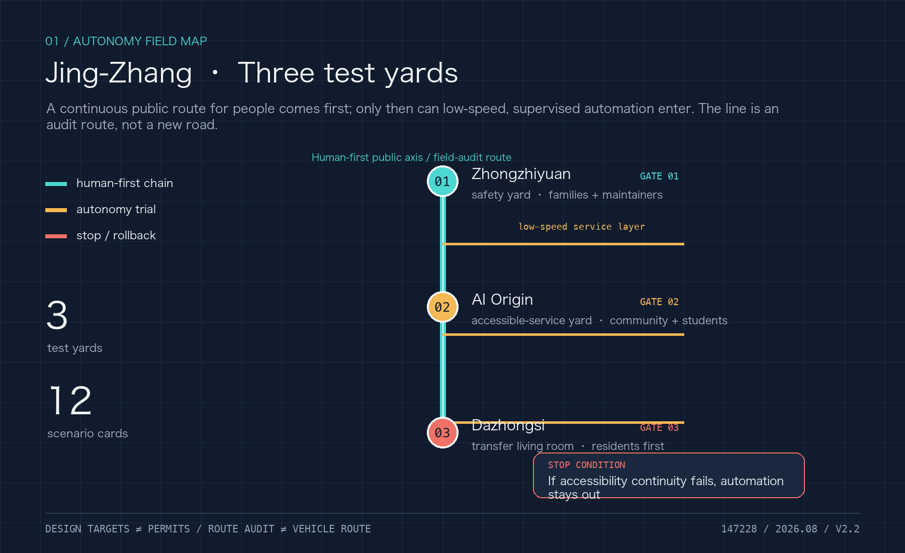
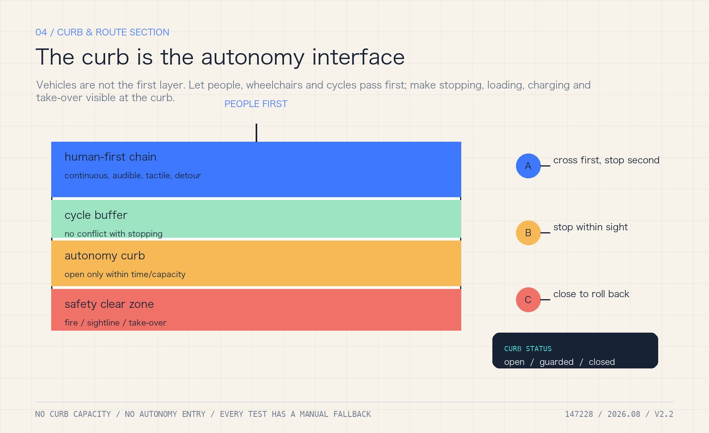
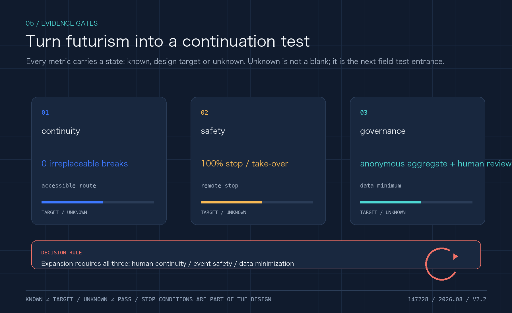
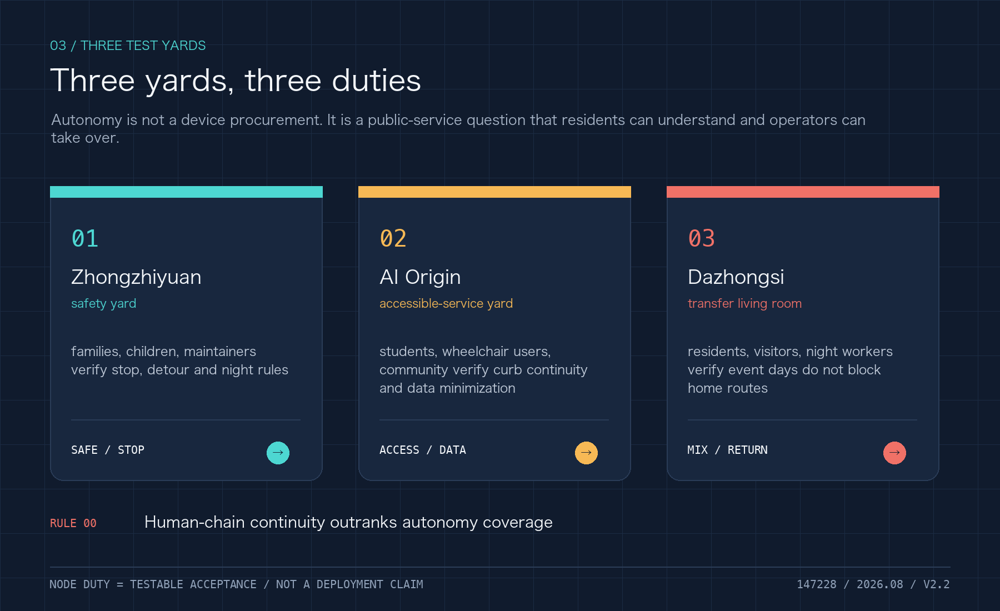

01 / SAFETY
Zhongzhiyuan
Safety evaluation, simulation, low-speed service and maintenance. First test: visible stop, detour and night rules.
Human continuity before vehicle entry. A public-space framework for low-speed, supervised, reversible autonomy after autonomous driving becomes common.
Safety evaluation, simulation, low-speed service and maintenance. First test: visible stop, detour and night rules.
Accessible-service yard for community, students and wheelchair users. Automation must have an equal human route.
Transfer living room for rail, walking, cycles, logistics and events. Home routes cannot be displaced by vehicles.

Register who may stop, when, for how long and who clears the space before deciding where automation enters. The curb can be open, booked, service, restricted or human-only. Any failure of accessibility, fire clearance or take-over returns the service to people.

Wheelchair, child, care and maintenance routes must remain complete.
AV-T01—T03 test curb conflict, equal service and offline/weather fallback.
No resident tracking, no app-only service, and every decision has an exit path.

Audit accessibility, register curb states, publish complaints and preserve human service.
Approved, supervised, low-speed windows only. Publish aggregate events and closures.
Scale only after safety, traffic, ecology, privacy, participation and insurance review.
